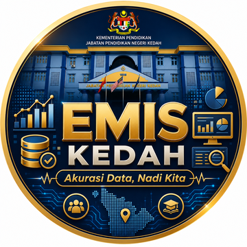

PIN pertama = Kod Sekolah anda. Anda akan diminta tukar selepas log masuk pertama.
Sistem dalaman JPN Kedah — capaian rujukan hanya selepas log masuk.
Untuk keselamatan, sila tetapkan PIN baharu bagi menggantikan PIN lalai.
Tanggungjawab, kalendar kutipan, dan definisi setiap variabel EMIS — disatukan daripada dokumen rasmi KPM untuk rujukan pantas sepanjang tahun.
Setiap tiang menyatukan satu dokumen rasmi ke dalam bentuk yang mudah dilayari dan dicari.
Peranan ikut peringkat, 5 jawatankuasa pengurusan maklumat, dan carta alir proses verifikasi data.
Jadual kutipan & semakan MPS/EMIS 12 bulan 2026, dengan fokus setiap bulan dan makluman wajib.
Manual Definisi Variabel MPS penuh — 16 seksyen, kod & keterangan, tindakan pengisian dan rujukan.
Prosedur Operasi Standard Sistem Pengurusan Sekolah (SPS) Versi 3.0 — Kementerian Pendidikan Malaysia, 1 Ogos 2022.
Jadual kutipan MPS/EMIS mengikut bulan bagi tahun 2026. Kutipan dijalankan berterusan sepanjang tahun; fokus bulanan berikut adalah garis panduan asas.
Semakan 2024 · Sektor Perancangan Data Makro Pendidikan, BPPDP. Setiap seksyen menyenaraikan variabel, kod & keterangan, serta rujukan pekeliling.
Isi & kemas kini butiran anda. Status akan disemak oleh Admin JPN untuk penyediaan Surat Lantikan.
Status penghantaran Surat Lantikan Guru Data bagi sekolah dalam daerah anda (paparan sahaja).
Semua permohonan seluruh negeri. Kemas kini status & eksport senarai untuk penyediaan surat.